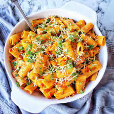

Pasta

Description
Pasta is food made from flour, water, and sometimes egg, that is cooked and usually served with a sauce. It is made in various shapes that have different names: Spaghetti, lasagna, ravioli, and cannelloni are all types of pasta.
Ingredients
- 2 pints (20 ounces) cherry tomatoes
- 1/2 cup extra-virgin olive oil
- Kosher salt and freshly ground black pepper
- One 8-ounce block feta cheese, drained
- 10 ounces mezze rigatoni
- 1 clove garlic, finely grated
- Pinch crushed red pepper flakes, optional
- 1/4 cup fresh basil leaves, thinly sliced
- Flaky sea salt, for serving
Steps
- Preheat the oven to 400 degrees F.
- Toss the cherry tomatoes and olive oil with 1/4 teaspoon of salt and several grinds of black pepper in a medium bowl until combined. Transfer to a 2 1/2- to 3-quart baking dish, place the feta in the center of the tomatoes and season with a pinch of black pepper. Bake until the tomatoes have burst and the feta has softened, about 30 minutes. Raise the heat to 450 degrees F and continue to cook until the tomatoes and feta are golden brown, 10 to 15 minutes more.
- Meanwhile, bring a large pot of generously salted water to a boil over high heat. Add the pasta and cook until al dente, about 13 minutes. Reserve 1/2 cup of the cooking water, then thoroughly drain the pasta.
- As soon as the tomatoes and feta come out of the oven, stir in the garlic and red pepper flakes (if using). Use the back of a spoon to smash the tomatoes and feta into a smooth and creamy sauce (it’s okay if some of the oil isn’t fully integrated). Add the pasta and half the basil and toss until evenly coated. If the sauce is too thick, stir in some pasta water a couple tablespoons at a time. Taste and adjust the seasoning with salt and pepper. Serve topped with the remaining basil and a pinch of sea salt.
Go to index.html